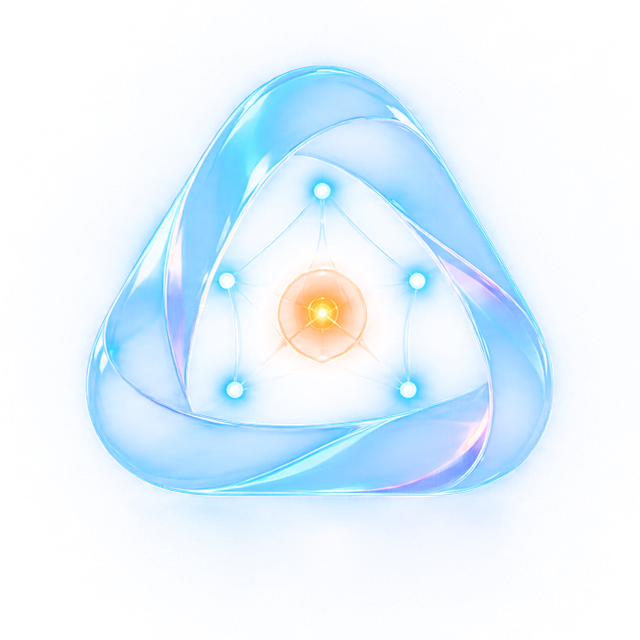
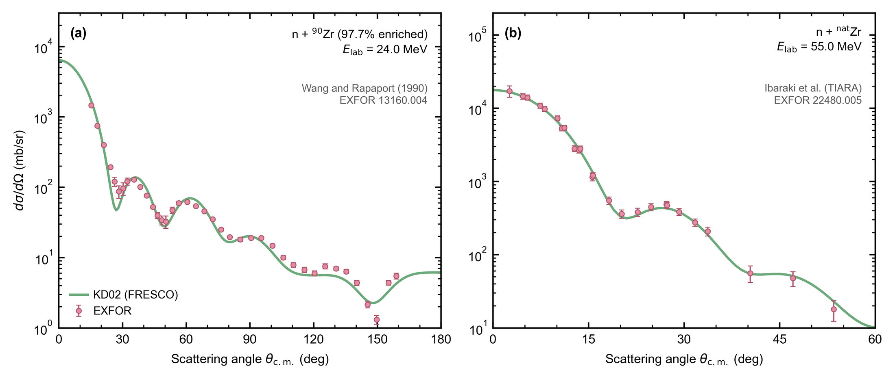
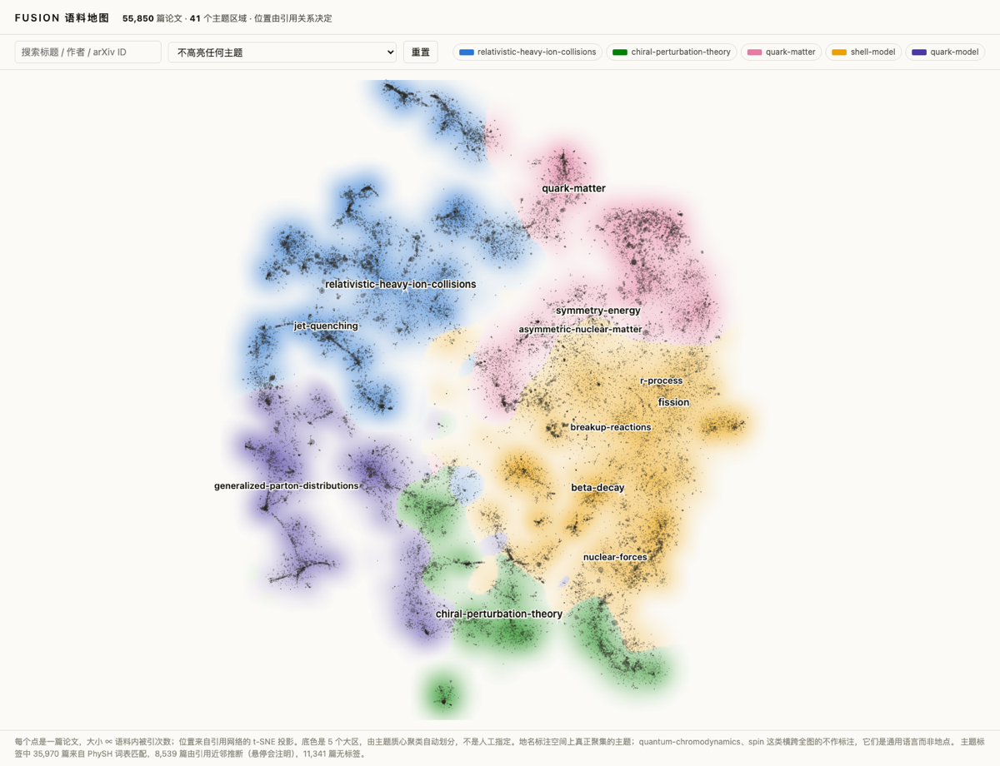

Framework for Unified Scientific Intelligence in Open Nuclear physics
FUSION 正在把核物理领域做成一个可验证的科研智能体平台：已经交付 17 个公开可获得核物理程序的专家技能，自带 62,714 篇 arXiv nucl-th 论文， 其中 61,357 篇有全文，并且能跑在包括国产模型在内的多种大模型上。 你身后的每一个光点，都是语料库里一篇真实的论文。 FUSION is building nuclear physics into a verifiable research-agent platform: 17 expert skills for publicly obtainable nuclear codes, a self-contained corpus of 62,714 arXiv nucl-th papers, including 61,357 with full text, and support for domestic as well as international LLMs. Every point of light behind this text is a real paper in the corpus.

是什么 · WhatWhat it is
FUSION 不是又一个聊天机器人。它是 opencode 的品牌分叉（MIT，每周 CI 自动重基上游）， 加上核物理专属的定制层，加上永远属于你自己的私人层。引擎与领域彻底解耦：上游进化，FUSION 跟着进化。 FUSION is not another chatbot. It is a rebrand fork of opencode (MIT, weekly CI rebase onto upstream), plus a nuclear-physics customization layer, plus a private layer that never leaves your machine. Engine and domain are fully decoupled: upstream evolves, FUSION evolves with it.
FUSION 只定义接口。每个人挂载自己的私人知识，谁也拿不走。FUSION defines the interface only. Everyone mounts their own private knowledge; nobody else ever sees it.
17 个程序技能已经交付；61,171 页知识库可离线浏览；EXFOR 数据技能已嵌入，约 29 个写作、审稿与文献技能正在迁移。Seventeen code skills are shipped; 61,171 knowledge-base pages browse offline; the EXFOR data skill is embedded, with about 29 writing, review, and literature skills being ported.
每周 CI 自动重基上游；模型无关：DeepSeek、Qwen、GLM、Claude、GPT 都能跑。Weekly CI rebase onto upstream; provider-agnostic: DeepSeek, Qwen, GLM, Claude, GPT all run.
↑ 上层依赖下层，私密性自上而下递增each layer builds on the one below; privacy increases upward
实际长什么样 · In actionIn action
Phase 0 质量验收的真实用例之一：在 deepseek-chat 上独立写出 n+⁹⁰Zr 弹性散射的 FRESCO 输入卡，与参考计算 4–5 位有效数字一致。 One of the actual Phase-0 acceptance cases: on deepseek-chat, independently author a FRESCO deck for n+⁹⁰Zr elastic scattering, agreeing with the reference calculation to 4–5 significant figures.
为什么 · WhyWhy FUSION
通用编程 agent 不认识 FRESCO 的 namelist，不知道 TALYS 退出码不可信，也搜不到 1990 年代的 nucl-th 预印本。FUSION 把这些领域知识做成平台的一等公民。 A generic coding agent has never seen a FRESCO namelist, doesn't know TALYS exits 0 on fatal errors, and can't search a nucl-th preprint from the 1990s. FUSION makes this domain knowledge a first-class citizen of the platform.
17 个技能已经覆盖反应、裂变统计、R 矩阵与核天体、结构与从头算、TDHF 和重离子输运。每个技能教会 agent 安装、写输入、运行、解析，并且必须通过清洁构建和分级数值验证才能上线。连“TALYS 出错也返回 0”这种坑都写在技能里。 Seventeen shipped skills now cover reactions, fission and statistical decay, R-matrix and nuclear astrophysics, structure and ab initio theory, TDHF, and heavy-ion transport. Each teaches installation, input authoring, execution, and parsing, and must pass a clean build and tiered numerical validation before release. Even traps such as “TALYS exits 0 on fatal errors” are encoded.
62,714 篇 arXiv nucl-th 论文（61,357 篇全文，1992–2026），SQLite FTS5 + BM25 离线检索；预生成 markdown 知识库：每篇论文一页（摘要 + 全文摘要 + 引用链接），每个 PhySH 概念一页。agent 用 grep 就能浏览，不需要任何外部 API。 62,714 arXiv nucl-th papers (61,357 fulltext, 1992–2026), searched offline via SQLite FTS5 + BM25; plus a pre-generated markdown wiki: one page per paper (abstract + digest + citation links), one page per PhySH concept. The agent browses it with plain grep. No external API required.
DeepSeek、Qwen、GLM、Claude、GPT 都能驱动。质量门槛在国产模型上验收：连不上国外 API 的用户不是被妥协的对象，而是设计的出发点。 Runs on DeepSeek, Qwen, GLM, Claude, or GPT. The quality gate was passed on a domestic model: users who cannot reach Western APIs are not an afterthought; they are the starting point of the design.
你的精读文献 wiki、研究档案、集群密钥挂载在私人层，FUSION 只定义接口，从不打包分发任何人的私人数据。平台开源，知识私有。 Your read-literature wiki, research profile, and cluster credentials mount into the private layer. FUSION defines the interface and never ships anyone's personal data. The platform is open; your knowledge is private.
信任来自数字 · BenchmarksTrust comes in significant figures
主项目已经从 5 个程序技能推进到 17 个，反应、结构、裂变统计、核天体四个论文门槛分区全部打通，随后又进入重离子输运。每个数字都来自实际构建和运行，不是能力清单里的计划项。 The main project has grown from 5 code skills to 17. The paper gate now covers reactions, structure, fission and statistical decay, and nuclear astrophysics, with heavy-ion transport added next. Every number below comes from an actual build and run, not a planned capability.
| 程序Code | 基准用例Benchmark case | 复现精度Agreement |
|---|---|---|
| TALYS T1 | 发行版自带 1,438 个参考输出文件the 1,438 reference output files shipped with the distribution | 1,415 个逐字节一致，其余 ~6 位有效数字1,415 byte-for-byte, rest to ~6 sig figs |
| NuclearToolkit.jl T1 | 完整 30 项测试：手征 EFT、HFMBPT、IMSRG、壳模型full 30-test chain: chiral EFT, HFMBPT, IMSRG, and shell model | 30/30；⁴He 基态能到 10⁻⁶30/30; ⁴He ground-state energy to 10⁻⁶ |
| Sky3D T1 | ¹⁶O 静态 TDHF：3,268 个能量、单粒子与多极矩量¹⁶O static TDHF: 3,268 energy, single-particle, and moment values | macOS/Linux 印出精度全部一致，迭代同为 370 步all printed values match on macOS/Linux, with the same 370 iterations |
| SkyNet T1 | 核合成网络自带比较套件与 NSE 物理锚点nucleosynthesis network comparison suite plus an NSE physics anchor | Linux 19/19；macOS 17/19，两个平台差异明确标注19/19 on Linux; 17/19 on macOS, with both platform limits stated |
| CGMF T1 | ²⁵²Cf 自发裂变与热中子诱发 ²³⁵U 的 40 事件历史40-event histories for ²⁵²Cf spontaneous fission and thermal-neutron-induced ²³⁵U | 与 LANL 发行版参考逐字节一致byte-for-byte identical to the LANL-shipped references |
| SMASH T1 | 104 项测试与 Au+Au 输运守恒律104-test suite and conservation laws in Au+Au transport | Linux 104/104；两平台 B = 788、Q = 316 精确守恒104/104 on Linux; exact B = 788 and Q = 316 on both platforms |
| AZURE2 T2 | ¹⁶O(p,γ)¹⁷F，按论文表格重建 9 个参数，不做拟合¹⁶O(p,γ)¹⁷F, nine parameters reconstructed from the paper, with no fit | S(90 keV) 偏差 -5.7%；对实测数据 χ²/N = 1.53S(90 keV) differs by -5.7%; χ²/N = 1.53 against measured data |
| FRESCO × COLOSS | n+⁹⁰Zr 弹性散射 50 MeV，KD02 全局光学势；两个独立求解器互检（Numerov 耦合道 vs 复标度 Lagrange-Laguerre）n+⁹⁰Zr elastic at 50 MeV, KD02 global OMP; two independent solvers cross-checked (Numerov coupled-channels vs complex-scaled Lagrange-Laguerre) | σR 一致到 6 位；步长收敛 9 位σR agrees to 6 sig figs; converged to 9 |
SMASH 在相同源码、输入和随机种子下，macOS 与 Linux 的部分粒子多重性最多相差 25%，但重子数 788 与电荷 316 在两边都是精确整数。于是验证器锚定守恒律，不把平台相关的多重性当作“标准答案”。这次检查还抓到了轻核 PDG 编码会被旧规则误判为重子数 0 的错误。 With identical source, input, and seed, some SMASH multiplicities differ by up to 25% between macOS and Linux, while baryon number 788 and charge 316 remain exact integers on both. The verifier therefore anchors on conservation laws instead of treating platform-sensitive multiplicities as ground truth. The same check caught an old rule that assigned baryon number zero to light-nucleus PDG codes.
T1 表示复现程序自己发行的参考输出或测试套件；T2 表示程序没有可复现的发行版参考值，因此使用跨平台构建、物理恒等式与实验数据组成证据链。每个技能都必须声明等级、适用范围和已知失败模式，再经过对抗审查与引文核验。 T1 reproduces references or a test suite shipped by the code itself. T2 is used when no distributable reference exists, so cross-platform builds, physics identities, and measured data form the evidence chain instead. Every skill declares its tier, scope, and failure modes before adversarial review and citation verification.
两次实测 · Case studiesTwo real runs
下面两次是完整跑完的真实任务，不是演示脚本。数字可以核对，边界也照实写：第二个案例最有价值的产出，恰恰是"这个能量点没有实验数据"。 Both of these ran end to end on real tasks, not demo scripts. The numbers are checkable and the limits are stated: in the second case, the most useful output turned out to be "no experimental data exists at that energy".
输入只有一篇 PDF（Abu-Ibrahim 等，PRC 77, 034607，碳同位素在质子靶上的反应截面）。全程离线，零次外部 API 调用。 The input was a single PDF (Abu-Ibrahim et al., PRC 77, 034607, reaction cross sections of carbon isotopes on a proton target). Fully offline, zero external API calls.
语料库把它定位到 0710.4193，引用图给出它引的 8 篇与引它的 5 篇（含同组前作 nucl-th/0612029、²²C 双中子晕 nucl-th/0605055、黑球近似 nucl-th/0410032），词法近邻再补上方法相同而体系不同的工作（氧同位素 Glauber、相对论碰撞近似）。预生成摘要直接给出可核对的数字：p+¹²C 40 MeV 的 σR = 432 mb、²²C 的 rm = 3.6 fm、经验公式 R(C) = 0.96 ± 0.05 覆盖 153 个数据点。
The corpus resolved it to 0710.4193; the citation graph returned the 8 papers it cites and the 5 citing it (including the group's own predecessor nucl-th/0612029, the ²²C two-neutron halo nucl-th/0605055, and the black-sphere approximation nucl-th/0410032), and lexical neighbours added same-method, different-system work. The pre-generated digest supplied checkable numbers: σR = 432 mb for p+¹²C at 40 MeV, rm = 3.6 fm for ²²C, and the empirical R(C) = 0.96 ± 0.05 across 153 data points.
边界照实说：引用边只在语料内部统计，RIKEN 的实验测量不属于 nucl-th 语料，所以"被引 5 次"低估真实引用量，要权威引用数仍需回到 INSPIRE。 Stated limit: citation edges are counted only inside the corpus, and the RIKEN measurements are not nucl-th papers, so "cited by 5" understates the real count. An authoritative citation count still needs INSPIRE.
n+⁹⁰Zr 弹性散射，50 MeV，KD02 全局光学势。参数不是凭记忆重写公式，而是复用本地已有的 Koning 原始 kd02.f，两套独立实现一致到 8 位有效数字。
n+⁹⁰Zr elastic scattering at 50 MeV with the KD02 global optical potential. The parameters were not rewritten from memory: the run reused Koning's own kd02.f already on disk, and the two independent implementations agreed to 8 significant figures.
过程中抓到一个会静默出错的陷阱：FRESCO 的半径约定是 R = r₀(Aₚ1/3 + At1/3)，而 KD02 定义在 R = r₀At1/3 上。不设 ap=0，所有半径大 22%，算出来的截面看着完全合理。最终 σR = 1301.640 mb：积分步长减半两次稳定到 9 位有效数字，匹配半径与分波数加倍完全不变；再用第二个独立求解器复核，COLOSS（复标度 Lagrange-Laguerre）给 1299.188 mb，FRESCO（Numerov 耦合道）给 1299.191 mb，6 位有效数字。W = 0 时吸收精确归零，通量守恒成立。
It caught a trap that fails silently: FRESCO builds radii as R = r₀(Aₚ1/3 + At1/3) while KD02 is defined on R = r₀At1/3. Without ap=0 every radius is 22% too large and the resulting cross section still looks entirely plausible. Final σR = 1301.640 mb: stable to 9 significant figures under two halvings of the radial step and unchanged when the matching radius and partial-wave limit were doubled. A second, structurally unrelated solver then checked it: COLOSS (complex-scaled Lagrange-Laguerre) gave 1299.188 mb against FRESCO's 1299.191 mb, 6 significant figures. With W = 0 the absorption vanished exactly and flux conservation held.
然后是那个否定结果：去 EXFOR 找实验数据，50 MeV 上根本没有 n+⁹⁰Zr 弹性散射测量。改为在两个真有数据的能量上各算一遍：24 MeV 中位比 0.89，55 MeV 的 χ²/N = 0.75，全部零自由参数。下图是这次的实际产出。 Then the negative result: EXFOR holds no n+⁹⁰Zr elastic measurement at 50 MeV at all. The run instead computed both energies where data really exist: median ratio 0.89 at 24 MeV, χ²/N = 0.75 at 55 MeV, all with zero free parameters. The figure below is what came out.

语料地图 · Corpus mapThe corpus map
知识库不只是一个数据库，它有形状。当前交互地图是 61,171 篇旧语料版本中满足引用度数门槛的 55,850 篇论文，完整知识库现已增长到 62,714 篇。每篇论文的位置由引用关系决定；地形是论文密度，地名是空间上真正聚集的 PhySH 主题。引用关系只做布局约束，一条边都不画：这是全语料可视化在这个量级上唯一不退化成毛线团的做法。 The knowledge base is not just a database; it has a shape. The interactive map is the 55,850-paper, degree-filtered view of the earlier 61,171-paper corpus, while the full corpus has now grown to 62,714 papers. Each position comes from citation structure; terrain is paper density and place names are PhySH topics that genuinely cluster. Citations constrain the layout, but not a single edge is drawn: at this scale it is the only way a full-corpus visualization avoids collapsing into a hairball.

→进入交互地图 · 悬停查看每一篇论文Enter the interactive map · hover any paper路线 · RoadmapRoadmap
Phase 0 的问题只有一个：便宜的国产模型加上好的领域脚手架，能不能达到可用的科研质量？答案是能。之后的一切才有意义。 Phase 0 asked a single question: can an affordable domestic model, given good domain scaffolding, reach usable research quality? The answer was yes. Everything after that builds on it.
在 deepseek-chat 上对照参考实现验收：文献精确检索、FRESCO 独立成卡、写作引文零幻觉。Validated on deepseek-chat against reference implementations: exact retrieval, independent FRESCO decks, zero-hallucination citations.
fusion-core 引擎仓库，每周自动重基上游 opencode，只带品牌补丁。The fusion-core engine repo, weekly auto-rebase onto upstream opencode, brand patch only.
17 个程序技能已交付，四个论文门槛分区全部打通；EXFOR 是第一个迁入的科研技能。Seventeen code skills shipped and all four paper-gate domains covered; EXFOR is the first research skill ported in.
kb-wiki 已生成 61,171 页，含 61,059 篇论文页与 108 个主题页；引用图谱和语义关系继续更新。kb-wiki now contains 61,171 pages, including 61,059 paper pages and 108 topic pages; citation and semantic layers keep evolving.
install.sh 一条命令装好引擎、技能与知识库；面向学生与社区发布。One install.sh command sets up engine, skills, and knowledge base; released to students and the community.
论文 · PaperThe paper
FUSION 论文需要的四个分区证据已经齐全：反应、结构、裂变统计、核天体都有至少一个完整技能，重离子输运是额外扩展。技能有分级基准，检索有查全对照，布局参数有聚集度扫描。现在缺的不是能力清单，而是把这些可复核结果写成论文。 The four evidence rows required for the FUSION paper are now complete: reactions, structure, fission and statistical decay, and nuclear astrophysics each have at least one finished skill, with heavy-ion transport as an additional extension. Skills have tiered benchmarks, retrieval has recall baselines, and layout parameters have coherence scans. The remaining job is to turn these checkable results into the paper.